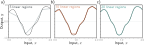
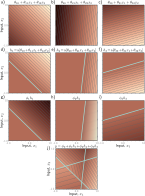
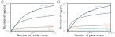
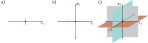

Shallow Neural Networks
Neural Network Example
\[\begin{eqnarray}\label{eq:snn_simple_eq} y &=& \mbox{f}[x,\boldsymbol\phi]\nonumber \\ &=&\phi_{0}+\phi_{1}\mbox{a}[\theta_{10} + \theta_{11}x]+\phi_{2}\mbox{a}[\theta_{20} + \theta_{21}x]+\phi_{3}\mbox{a}[\theta_{30} + \theta_{31}x]. \end{eqnarray}\]

Rectified linear unit (ReLU). This activation function returns zero if the input is less than zero and returns the input unchanged otherwise. In other words, it clips negative values to zero. Note that there are many other possi- ble choices for the activation function (see figure 3.13), but the ReLU is the most commonly used and the easiest to understand.
\[\begin{eqnarray}\label{eq:snn_relu} \mbox{a}[z] = \mbox{ReLU}[z] = \begin{cases} 0 & \quad z <0 \\ z & \quad z\geq 0\end{cases}. \end{eqnarray}\]

Family of functions defined by equation 3.1. a–c) Functions for three different choices of the ten parameters ϕ. In each case, the input/output relation is piecewise linear. However, the positions of the joints, the slopes of the linear regions between them, and the overall height vary.
Neural Network intuition
\[\begin{eqnarray}\label{eq:snn_simple_eq1b} h_{1} &=& \mbox{a}[\theta_{10} + \theta_{11}x] \nonumber \\ h_{2} &=& \mbox{a}[\theta_{20} + \theta_{21}x] \nonumber \\ h_{3} &=& \mbox{a}[\theta_{30} + \theta_{31}x], \end{eqnarray}\]
\[\begin{eqnarray}\label{eq:snn_simple_eq2} y = \phi_{0}+\phi_{1}h_{1}+\phi_{2}h_{2}+\phi_{3}h_{3}. \end{eqnarray}\]

Computation for function in figure 3.2a. a–c) The input x is passed through three linear functions, each with a different y-intercept θ•0 and slope θ•1. d–f) Each line is passed through the ReLU activation function, which clips negative values to zero. g–i) The three clipped lines are then weighted (scaled) by ϕ1, ϕ2, and ϕ3, respectively. j) Finally, the clipped and weighted functions are summed, and an offset ϕ0 that controls the height is added. Each of the four linear regions corresponds to a different activation pattern in the hidden units. In the shaded region, h2 is inactive (clipped), but h1 and h3 are both active. (Interactive figure)
Depicting neural networks

Depicting neural networks. a) The input x is on the left, the hidden units h1, h2, and h3 in the center, and the output y on the right. Computation flows from left to right. The input is used to compute the hidden units, which are combined to create the output. Each of the ten arrows represents a parameter (intercepts in orange and slopes in black). Each parameter multiplies its source and adds the result to its target. For example, we multiply the parameter ϕ1 by source h1 and add it to y. We introduce additional nodes containing ones (orange circles) to incorporate the offsets into this scheme, so we multiply ϕ0 by one (with no effect) and add it to y. ReLU functions are applied at the hidden units. b) More typically, the intercepts, ReLU functions, and parameter names are omitted; this simpler depiction represents the same network.
Universal Approximation theorem
\[\begin{eqnarray} h_{d} = \mbox{a}[\theta_{d0} + \theta_{d1}x], \end{eqnarray}\]
\[\begin{eqnarray}\label{eq:snn_many_hidden} y = \phi_{0}+\sum_{d=1}^{D}\phi_{d}h_{d}. \end{eqnarray}\]
Multivariate input and output

Approximation of a 1D function (dashed line) by a piecewise linear model. a–c) As the number of regions increases, the model becomes closer and closer to the continuous function. A neural network with a scalar input creates one extra linear region per hidden unit. This idea generalizes to functions in Di dimensions. The universal approximation theorem proves that, with enough hidden units, there exists a shallow neural network that can describe any given continuous function defined on a compact subset of RDi to arbitrary precision.
Network with one input, four hidden units, and two outputs. a) Visualization of network structure. b) This network produces two piecewise linear functions, y1[x] and y2[x]. The four “joints” of these functions (at vertical dotted lines) are constrained to be in the same places since they share the same hidden units, but the slopes and overall height may differ.
Visualizing multivariate outputs
\[\begin{eqnarray}\label{eq:snn_multiple_out2} h_{1} &=& \mbox{a}[\theta_{10} + \theta_{11}x] \nonumber \\ h_{2} &=& \mbox{a}[\theta_{20} + \theta_{21}x] \nonumber \\ h_{3} &=& \mbox{a}[\theta_{30} + \theta_{31}x] \nonumber \\ h_{4} &=& \mbox{a}[\theta_{40} + \theta_{41}x], \end{eqnarray}\]
\[\begin{eqnarray}\label{eq:snn_multiple_out1} y_1 &=& \phi_{10}+\phi_{11}h_{1}+\phi_{12}h_{2}+\phi_{13}h_{3}+\phi_{14}h_{4}\nonumber \\ y_2 &=& \phi_{20}+\phi_{21}h_{1}+\phi_{22}h_{2}+\phi_{23}h_{3}+\phi_{24}h_{4}. \end{eqnarray}\]
Visualizing multivariate inputs
Visualization of neural network with 2D multivariate input x = [x1, x2]T and scalar output y.
\[\begin{eqnarray}\label{eq:snn_multiple3} h_{1} &=& \mbox{a}[\theta_{10} + \theta_{11}x_1+ \theta_{12}x_2] \nonumber \\ h_{2} &=& \mbox{a}[\theta_{20} + \theta_{21}x_1+\theta_{22}x_2] \nonumber \\ h_{3} &=& \mbox{a}[\theta_{30} + \theta_{31}x_1+\theta_{32}x_2], \end{eqnarray}\]
\[\begin{eqnarray}\label{eq:snn_multiple4} y = \phi_{0}+\phi_{1}h_{1}+\phi_{2}h_{2}+\phi_{3}h_{3}. \end{eqnarray}\]

Visualization of how a shallow neural network builds up a piecewise linear approximation in 2D. Processing in network with two inputs x = [x1, x2]T , three hidden units h1, h2, h3, and one output y. a–c) The input to each hidden unit is a linear function of the two inputs, which corresponds to an oriented plane. Brightness indicates function output. For example, in panel (a), the brightness represents θ10 + θ11x1 + θ12x2. Thin lines are contours. d–f) Each plane is clipped by the ReLU activation function (cyan lines are equivalent to “joints” in figures 3.3d– f). g-i) The clipped planes are then weighted, and j) summed together with an offset that determines the overall height of the surface. The result is a continuous surface made up of convex piecewise linear polygonal regions. (Interactive figure)
Shallow neural networks: general case
\[\begin{eqnarray}\label{eq:snn_general_1} h_{d} = \mbox{a}\left[\theta_{d0} + \sum_{i=1}^{D_{i}}\theta_{di}x_i\right], \end{eqnarray}\]
\[\begin{eqnarray}\label{eq:snn_general_2} y_j = \phi_{j0}+\sum_{d=1}^{D}\phi_{jd}h_{d}, \end{eqnarray}\]

Linear regions vs. hidden units. a) Maximum possible regions as a function of the number of hidden units for five different input dimensions Di = {1, 5, 10, 50, 100}. The number of regions increases rapidly in high dimensions; with D = 500 units and input size Di = 100, there can be greater than 10107 regions (solid circle). b) The same data are plotted as a function of the number of parameters. The solid circle represents the same model as in panel (a) with D = 500 hidden units. This network has 51, 001 parameters and would be considered very small by modern standards.

Figure 3.10 Number of linear regions vs. input dimensions. a) With a single input dimension, a model with one hidden unit creates one joint, which divides the axis into two linear regions. b) With two input dimensions, a model with two hidden units can divide the input space using two lines (here aligned with axes) to create four regions. c) With three input dimensions, a model with three hidden units can divide the input space using three planes (again aligned with axes) to create eight regions. Continuing this argument, it follows that a model with Di input dimensions and Di hidden units can divide the input space with Di hyperplanes to create 2Di linear regions.
Visualization of neural network with three inputs and two outputs. This network has twenty parameters. There are fifteen slopes (indicated by arrows) and five offsets (not shown).

Terminology. A shallow network consists of an input layer, a hidden layer, and an output layer. Each layer is connected to the next by forward connections (arrows). For this reason, these models are referred to as feed-forward networks. When every variable in one layer connects to every variable in the next, we call this a fully connected network. Each connection represents a slope parameter in the underlying equation, and these parameters are termed weights. The variables in the hidden layer are termed neurons or hidden units. The values feeding into the hidden units are termed pre-activations, and the values at the hidden units (i.e., after the ReLU function is applied) are termed activations.
\[\begin{eqnarray}\label{eq:snn_harswish} \mbox{HardSwish}[z] = \begin{cases} 0 & \quad z <-3 \\ z(z+3)/6 & \quad -3\leq z\leq 3 \\ z &\quad z>3 \end{cases}. \end{eqnarray}\]
\[\begin{eqnarray} \mbox{ReLU}[\alpha \cdot z] = \alpha \cdot \mbox{ReLU}[z]. \end{eqnarray}\]
\[\begin{eqnarray} \mbox{heaviside}[z] = \begin{cases} 0 & \quad z <0 \\ 1 & \quad z\geq 0\end{cases} \hspace{2cm} \mbox{rect}[z] = \begin{cases} 0 & \quad z < 0 \\ 1 & \quad 0 \leq z\leq 1 \\ 0 & \quad z > 1\end{cases}. \end{eqnarray}\]

Activation functions. a) Logistic sigmoid and tanh functions. b) Leaky ReLU and parametric ReLU with parameter 0.25. c) SoftPlus, Gaussian error linear unit, and sigmoid linear unit. d) Exponential linear unit with parameters 0.5 and 1.0, e) Scaled exponential linear unit. f) Swish with parameters 0.4, 1.0, and 1.4.

Processing in network with one input, three hidden units, and one output for problem 3.4. a–c) The input to each hidden unit is a linear function of the inputs. The first two are the same as in figure 3.3, but the last one differs.